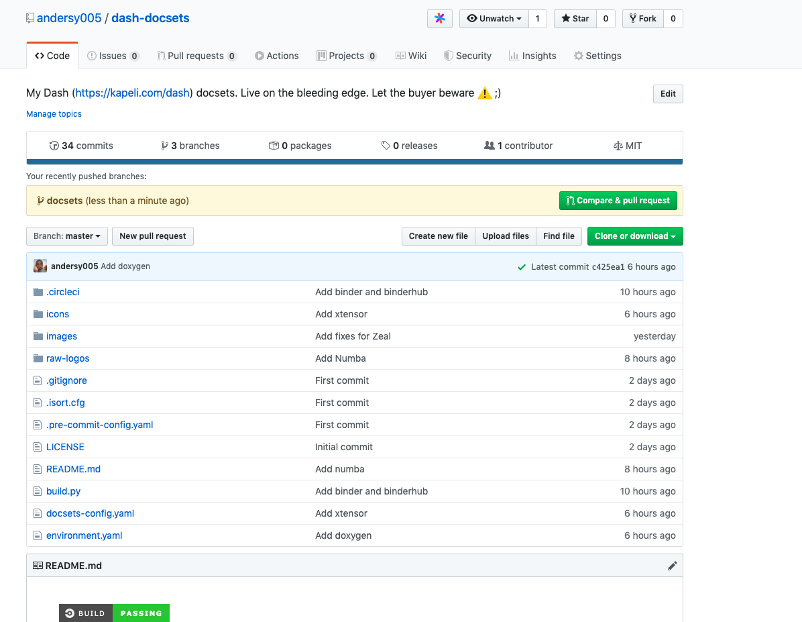
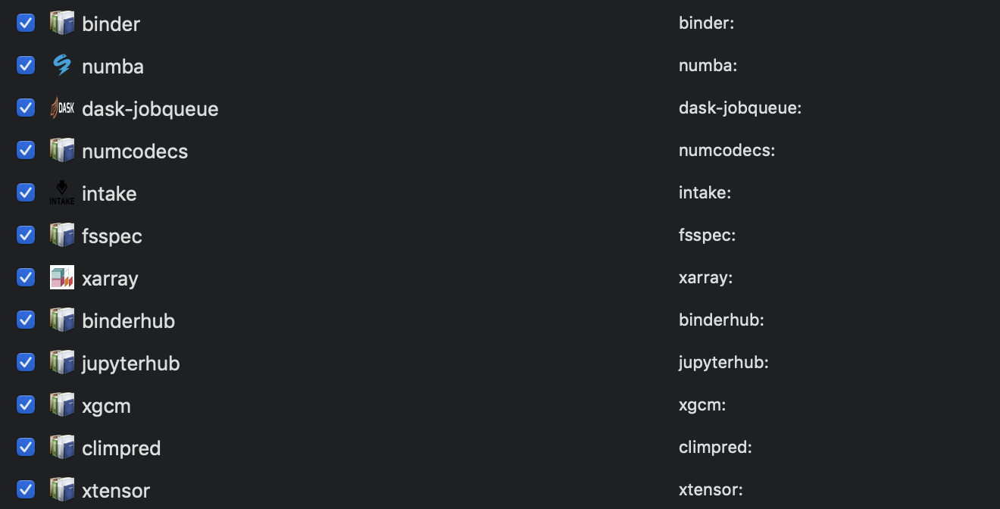

A Knitting Weekend with Dash and Python¶
For the last few months, I’ve become a huge fan of the quiet weekend, the weekend when no plan is the plan, and you are in no hurry at all. I woke up on Saturday morning, and I decided that this weekend was going to be a quiet one. After watching a late morning football game from the English Premier League – yup, I refuse to call it soccer 😀 – I decided to write some code-nothing big, just a few lines of codes to improve my experience with Dash, a tool that I’ve been using for a few months.
Dash is a MacOS application that offers offline documentation for hundreds of programming languages, frameworks and libraries. Dash is awesome for offline programming when using spotty WiFi or on long-haul flights. While it is free as in beer, it’s one of the programs that are worth paying for.
The Problem¶
I’ve been using Dash for quite some time and have been really satisfied with the preset selection of documentation sets. At some point, I started running into scenarios when I was using libraries/packages whose documentations aren’t available for Dash. So, my objective was to generate documentation sets for these libraries myself. I should point out that I mostly work with Python packages, and most Python packages use sphinx as their main framework for building documentation. So, my goal was to find a way to easily build documentation sets and integrate them with Dash.
The Solution: Doc2dash and Sphinx To The Rescue¶
After few minutes of google searches, I found doc2dash. doc2dash is a great tool for converting HTML documentation to Dash’s format. doc2dash takes the output of Sphinx documentation and converts it to a Dash documentation package.
Show Me The Code!¶
In Just a few steps, I was able to build a docset for Zarr using dash2doc:
Create new conda environment and install dependencies
$ conda create -n dash-docs -c conda-forge \ doc2dash sphinx-rtd-theme numpydoc sphinx-issues $ conda activate dash-docsPull down the project form GitHub and build the documentation
$ git clone https://github.com/zarr-developers/zarr-python.git $ cd zarr-python $ python -m pip install -e . $ cd docs $ make html
Finally, run doc2dash with a few commands
$ doc2dash --name zarr --index-page index.html --enable-js \ --add-to-dash _build/htmlAnd with that I had a shiny new Zarr docset in Dash:

Once I was confident that I understood how to do this for one project, I decided to automate this process for a bunch of other projects. By dinner time (on Saturday) I felt like I was on the right track. After a few more hours on Sunday and Monday, I had a GitHub repository with continuous integration via CircleCI up and running, and had a dozen docsets generated:


Was It Worth Fifteen or Twenty Hours of My Life?¶
I think so: I took pleasure in doing something that I knew how to do and in creating something that would fit my needs perfectly.
Sitting in a chair in front a computer screen while listening to MIX 100 Denver Radio station 😀, I was reminded of the intriguing parallels between knitting and programming:
“Knitting is Coding, and Yarn is a Programmable material.”
On quiet weekends like this I write code for fun, and Visual Studio Code & Python are my yarn and needles.